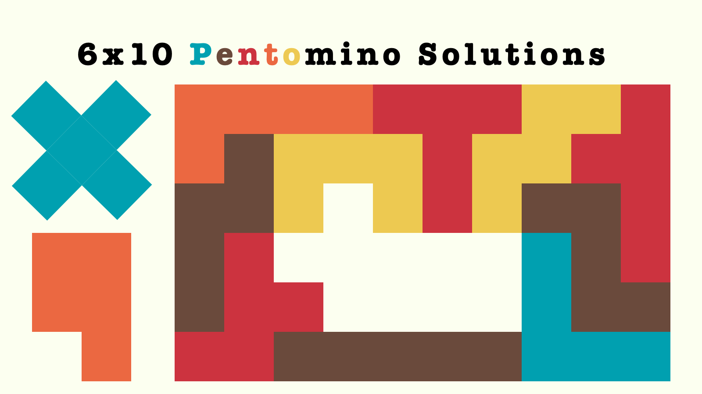

Solving the Puzzle: The 6x10 Pentomino Challenge (with a Big Help)

The 6x10 pentomino challenge asks you to fit all 12 pieces into a rectangle perfectly—no overlaps, no gaps, just pure geometric magic. There are 2339 unique solutions! My go-to solution site has been isomerdesign.com. In this post, I’m not solving the 6x10 challenge myself, but I’ll visualize some solutions using R & trusty ggplot2.
Pakcages Used in This Blog Post
library(tidyverse) # Easily Install and Load the 'Tidyverse'library(cowplot) # Streamlined Plot Theme and Plot Annotations for 'ggplot2'library(sf) # Simple Features for Rlibrary(patchwork) # The Composer of Plots### Just playing around with color paletteretro_col_a <-c("#00A0B0", "#6A4A3C", "#CC333F", "#EB6841", "#EDC951")retro_col_b <-c("#CA0B0B", "#EAA109", "#71A6AE", "#18668C", "#06394D")retro_col_c <-c("#325A64", "#44838F", "#68D0BD", "#F53F19", "#891C29")retro_col_d <-c("#241965", "#653993", "#9F4094", "#B73D6E", "#F19406")retro_col_e <-c("#383431", "#79C39E", "#EAD1B5", "#EE9B69", "#E77843")retro_col_f <-c("#8E2605", "#E54B1F", "#FDC018", "#628A81", "#5F3924")retro_col_g <-c("#811638", "#0B7978", "#FCB632", "#F27238", "#C32327")retro_col <-c(retro_col_b, retro_col_e, retro_col_a, retro_col_d, retro_col_c, retro_col_f, retro_col_g)
I started by loading few useful pakages above. tidyverse makes data wrangling simple, while sf helps manage spartial geometries. Additionally I’ve prepped retro-inspired color palettes so that I can give the visuals a nostalgic puzzle game vibes.
Loading the Solutions
Reading Text Solution File
### Thank you to solution as text! sol_df <-read_csv("https://isomerdesign.com/Pentomino/6x10/solutions.txt",col_names=F)### 2339 Solutions included in CSV### Turn solution into data framemake_coord_df <-function(x){#x <- sol_df$X2[[1]] x <-str_split(str_remove_all(x," "),"",simplify=T)matrix(x,nrow=6,ncol=10, byrow=T) |>as_tibble() |>mutate(y=row_number()) |>pivot_longer(-y) |>mutate(x=as.integer(str_extract(name,"\\d+"))) |>select(x,y,piece=value) |>group_by(piece) |>mutate(x_min=min(x),y_min=min(y),x_max=max(x),y_max=max(y),idx=row_number(x+y),adj_x=x-x_min+1,adj_y=y-y_min+1) |>ungroup()}### df for data framesol_df <- sol_df |>mutate(solution_df =map(X2,make_coord_df))### df_long for data frame that's unnestedsol_df_long <- sol_df |>unnest(solution_df)
The solutions are provided in a plain text file, where each solution is represented by 10 strings of characters x 6 rows for each of 2339 solutions for 6x10 rectangle. Each letter corresponds to one of the 12 pentomino pieces. Using this as input, I created a function to process each solution into a structured tibble (data frame).
Convert to SF Object
# Function to turn coordinate as center and conver to squarecreate_square_fence <-function(x, y) {st_polygon(list(matrix(c( x-0.5, y-0.5, # Bottom Left x+0.5, y-0.5, #Bottom Right x+0.5, y+0.5, #Top Right x-0.5, y+0.5, #Top Left x-0.5, y-0.5# Close the polygon by coming back to bottom left ), ncol =2, byrow =TRUE)))}### Convert data frame into sf objectsol_sf <- sol_df_long |>rowwise() |># For each row, create a square geometry from the x, y coordinatemutate(geometry=list(create_square_fence(x,y)),geometry_adj=list(create_square_fence(adj_x,adj_y))) |>ungroup() |># Remove rowwise groupinggroup_by(X1,piece) |>summarise(geometry=st_union(st_sfc(geometry)),.groups="drop",geometry_adj=st_union(st_sfc(geometry_adj),.groups="drop")) |>st_sf() pieces_63 <-sol_sf |>st_drop_geometry() |>count(piece,geometry_adj,sort=T) |>arrange(piece) |>mutate(i=row_number()) |>mutate(col=colourvalues::color_values(i,farver::decode_colour(retro_col)))sol_sf_comb <- sol_sf |>inner_join(pieces_63 |>select(col,geometry_adj,piece))
Once the data frame was ready, next step was to convert it into sf geometries for spatial analysis and visualization. Here’s how I’ve tackled it.
Square Polygons: I wrote a small helper function to create a square polygon for each (x,y) coordinate. Each square represents a single unit of the pentomino square pieces.
Merging into Shapes: To represent entire pentomino pieces, I’ve combined all individual square polygons for a piece into a single shape using st_union().
Normalized Geometry for Variations:
Pentomino pieces can appear in up to 8 variations (rotations and flips). For example, a single piece might have multiple “faces”, depending on how it’s oriented in the solution.
To identify which variations of a piece was used in each solution, I created adjusted geometries by aligning the shapes relative to their bounding boxes.
Heatmap of Pentomino Placement Patterns
With the 2339 Solutions processed and converted into geometries, I decided to analyze where each pentomino piece tends to appear on the board. The result is the heatmap you see below.
The code using geom_tile() to represent the frequency of each piece at each (x,y) position across all solutions. A facet is created for each pentomino piece, so we can see the pattern differences.
In above I created a visualization to recap the 12 pentomino shapes, each column shows different variations of piece faces. There are 12 free pieces, but 63 fixed pieces.
Some Solutions !
Since it’s bit hard to display all the solution at once… I’ve first chosen these 12 special solutions. These 12 solutions are particularly interesting because they belong to 3 unique sets where the pieces remain in their default orientation—no flipping or rotation is required! Within each set, there are 4 solutions that differ only in the arrangement of the pieces on the board.
Visualizing these solutions has been like uncovering hidden patterns in a puzzle. It’s been pretty fun execise learning to utilize some of function in sf packages too. And most importantly, now I have solution on my blog I can put away the actual puzzle board after the play.